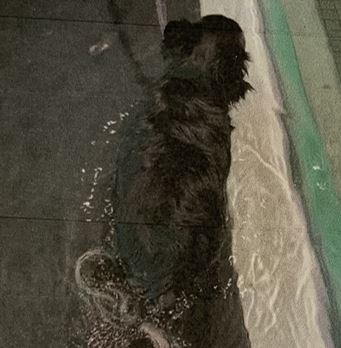
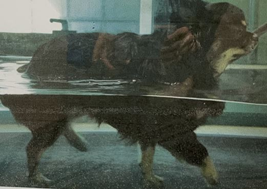
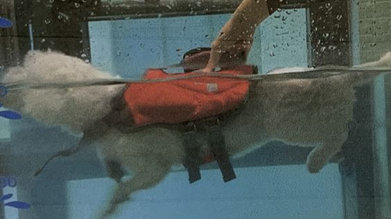
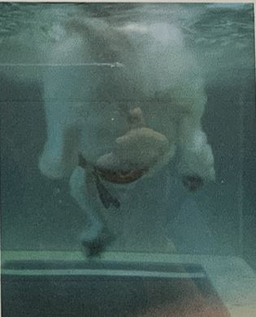

Clinic
진료
진료
Lateral, VD 로 방사선촬영을 하나 환축의 호흡이 좋지 않을 경우 또는 통증이 심할 경우 DV 로 촬영 가능
수술 후 근육을 부드럽게 자극시켜 회복속도를 올려주는 역할
두가지 종류가 있으며 환축상태에 따라 달라진다.
근육이 향상되어야하는 아이들의 경우 수술 후 회복이 끝나면 수중 트레드밀에서 무리 없게 걷는 연습과 근육향상을 위해 시행
 초반의 경우 너무 빠른 속도로 설정해서는 안됨
휴식시간에는 핫팩 또는 담요로 몸을 따뜻하게 / 겨울일 경우 오히려 물 밖에 더 추울수도 있음
재활 부위가 앞다리거나 걸음거리 보정일 경우 앞이나 윗면도 촬영
심한관절염이나 류마티스 관절염 또는 뼈가 매우 약해 조심해야 하는 환축의 경우 트레드밀이 아닌 수영치료로 근육 향상
 간혹 구명조끼 안에 다리를 넣어 움직이지 않으려는 환축이 있다면 구명조끼를 탈의 후 단단히 보정후 진행
기구를 통해 술 부 주변을 직접적으로 근육을 자극시키는 회복속도를 올려주는 치료방법